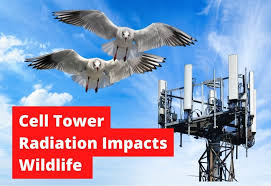

The impact of radiation from mobile phone towers on human beings and wildlife has been mooted time and again. The remarkable increase in mobile phones users in the country and mushrooming of mobile tower installations in every nook and corner of cities and towns have raised concerns on its probable impact on wildlife and human health. Owing to a number of media reports and public concerns the Ministry of Environment and Forests has come out with an advisory on the Mobile Towers to minimize their impacts on wildlife. The Advisory is a result of a study conducted by an Expert Committee constituted by MoEF to research the possible impacts of mobile towers on wildlife including birds and bees.
The MoEF constituted the Committee to study the impacts of communication/cell phone towers on August 30, 2010. The Committee comprised of officials from the Department of Telecommunication, Indian Council for Medical Research, Department of Biotechnology and MoEF submitted its report in 2011 and found out that the Electro Magnetic Radiations (EMR) interferes with the biological systems. The findings of the Committee were based on the various national and international studies conducted so far on the plausible impacts of EMR on living beings. The findings revealed that EMR is a potential cause of decline of animal populations and deterioration of health of plants and humans living near radiation sources. In the wake of such alarming findings the MoEF came out with a list of actions to be undertaken by agencies involved in providing, regulating and dealing with the EMR based services. Action points for different stakeholders have been devised in the advisory with an objective to mitigate and avoid the impacts of EMR.
For more information visit Here